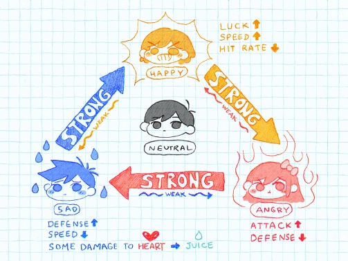
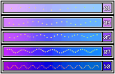
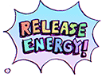

Emotion Chart
This is a chart that's aquired in the game. It describes the different emotions in battles along with their strengths and weaknesses, think of it as Rock Paper Scissors.
- ANGRY: Increased Attack, Decreased Defense. WEAK AGAINST: SAD
- SAD: Increased Defense, Decreased Speed, Taking damage can reduce your JUICE as well. WEAK AGAINST: HAPPY
- HAPPY: Increased Luck, Increased Speed, Decreased Hit Rate. WEAK AGAINST: ANGRY
- NEUTRAL: Default Stats
Other Combat Elements
JUICE is used when you choose to use a skill. Every skill costs a certain amount of JUICE except for the GUARD skill. You can replenish your JUICE by using ITEMS. (JUICE cannot be lost from an attack unless your characters is SAD)
HEALTH is the health of your character that goes down everytime they take a hit from an opponent. You can gain your HEALTH back through SKILLS, FOLLOW-UP MOVES, and ITEMS.
The ENERGY BAR is at the bottom of the screen and increases anytime a character is attacked by an opponent. Use your ENERGY BAR to do FOLLOW-UP MOVES and the ULTIMATE ATTACK.
FOLLOW-UP MOVES are moves you can do after you ATTACK an opponent. (FOLLOW-UP MOVES cannot be used after you use a SKILL) These moves differ from player to player and can help you in multiple scenarios.
Your ULTIMATE ATTACK is a FOLLOW-UP MOVE specific to OMORI, only OMORI can play this move after an ATTACK. The ULTIMATE ATTACK becomes accessible when you get to 10 energy and is a culmination of attacks from each main character. This does a lot of damage and comes in handy